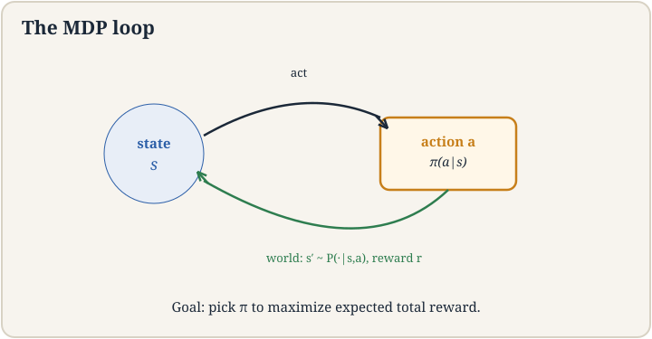
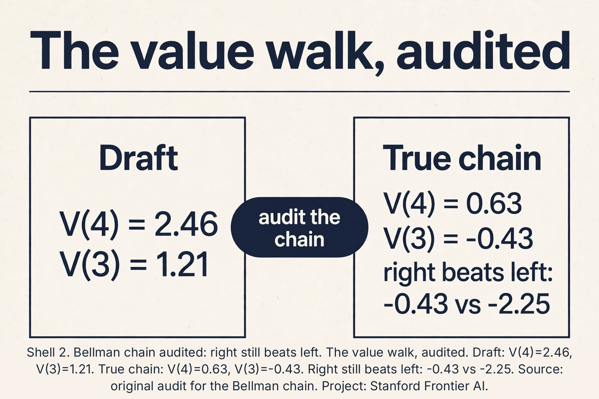
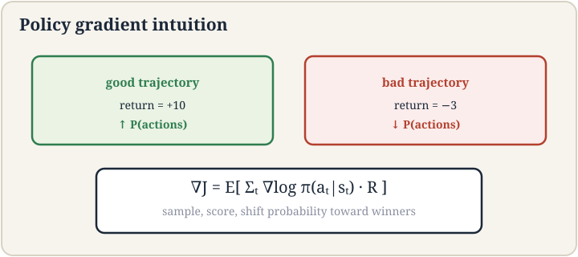
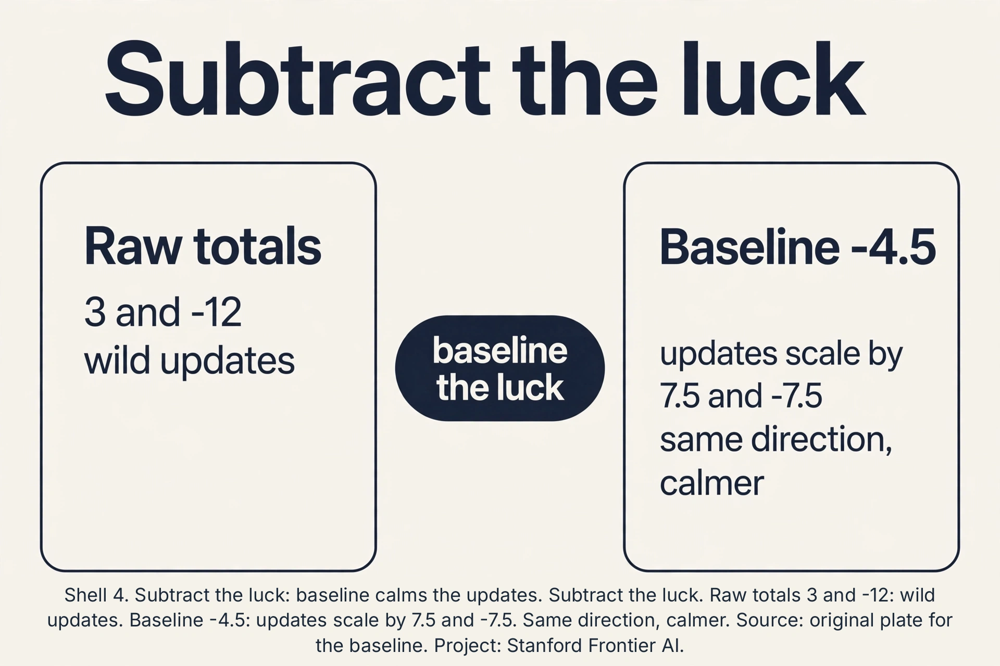
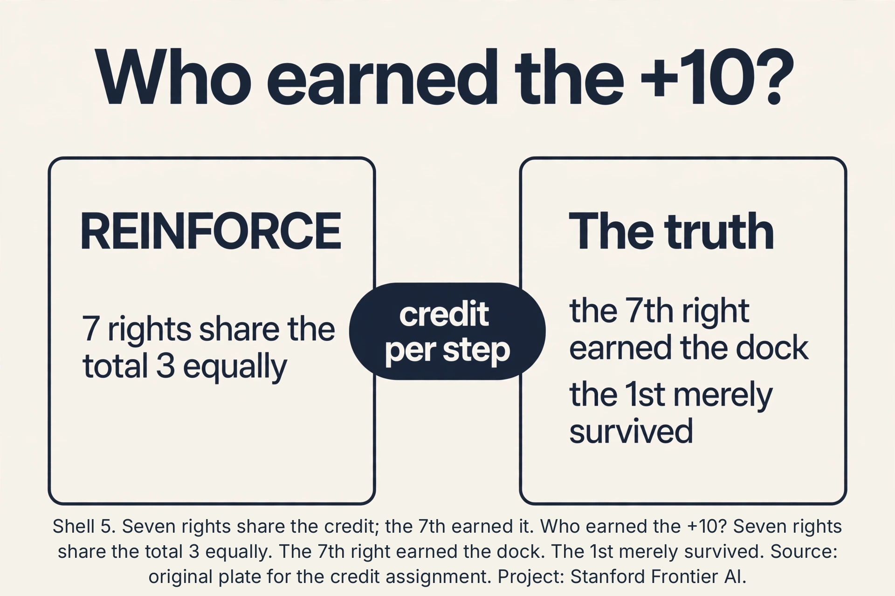

Lecture 16: Reinforcement Learning Basics and Policy Gradient
Video blocked (ad-blocker or local file mode).
Watch on YouTubeVideo not loading? Watch on YouTube
Original lecture. Tengyu Ma builds the MDP, value functions, and the REINFORCE policy-gradient algorithm.
The job: the robot and the charging dock
A robot sits at position 3 on a track numbered 1 to 10. Its dock is at 10. Each step it may move left or right. Reaching 10 earns reward +10. Every step costs -1 (batteries drain). The job: a strategy for acting that maximizes total reward. Nobody shows the robot the right moves. It must learn from trying.
Supervised learning cannot touch this. There are no labeled (input, correct action) pairs: the “correct” action at position 3 depends on the whole future. The experience is a history of actions and rewards. That is the reinforcement learning setup from lecture 1, now built formally.
The MDP: five pieces
A Markov decision process (MDP) is the formal frame. Five pieces:
S, the states. Everything needed to describe the world. Here: positions 1..10. For a real robot: joint angles, camera images. For Go: the whole board, 3^361 possible states. The lecture’s modeling note: the state should include everything in theory, but you abstract: a 3D map of the world is usually left out.
A, the actions. What the agent can do. Here: left, right.
P, the transitions. P(s’|s,a): the probability of landing in s’ after action a in state s. The world may be slippery: “move right” succeeds with probability 0.9, stays put with 0.1.
R, the rewards. R(s,a): the immediate score. Here: +10 at the dock, -1 per step.
Gamma, the discount. Future rewards count slightly less than present ones: 0.99^t. This keeps infinite sums finite and encodes “sooner is better”.
Markov means the future depends only on the present state, not the history: P(s’|s,a) captures everything. A policy pi(a|s) is the strategy: the probability of each action in each state. The goal: the policy maximizing expected total discounted reward.

First attempt: be greedy
The naive policy: at each state, take the action with the biggest immediate reward. At position 3: left gives -1, right gives -1. Tie. Say it goes left to 2. At 2: left -1, right -1. Wanders. The greedy agent never reasons that 9 rights in a row earn +10. It chases immediate reward and misses the dock forever, paying -1 per step into eternity. Total: negative infinity (discounted at gamma = 0.9: -1/(1-0.9) = -10).
The failure: rewards are delayed. The action’s value is not its immediate reward but the future it leads to. Greedy is blind to the future.
Value functions: price the future
The value V(s) is the expected total future reward from state s under the policy. The action value Q(s,a) is the expected total after taking action a in s, then following the policy. They satisfy the Bellman equation: value now equals immediate reward plus discounted value later.
V(s) = E[ R(s,a) + gamma * V(s') ]
Work the toy. Policy: always go right. Deterministic moves, gamma = 0.9, dock at 10 gives +10, each step -1. V(10) = 0 (done). V(9) = -1 + 0.910 = 8.0. V(8) = -1 + 0.98.0 = 6.2. V(7) = -1 + 0.96.2 = 4.58. Walking back: V(6) = 3.12, V(5) = 1.81, V(4) = 0.63, V(3) = -0.43. (An earlier draft of this lesson wrote V(4) = 2.46 and V(3) = 1.21: wrong. The audit is in the subchapter below.) The value at 3 is negative: 7 discounted -1 steps outweigh the discounted +10. But Q(3, right) = -0.43 still beats Q(3, left) = -1 + 0.9V(2) = -1 + 0.9*(-1.39) = -2.25. Right wins by the numbers: not because it is profitable, but because it loses least. Values turn delayed rewards into present prices, including bad news.
Subchapter: the value walk, audited
Run the chain the draft skipped. V(9) = 8.0, V(8) = 6.2, V(7) = 4.58 are correct. Continue: V(6) = -1 + 0.94.58 = 3.122. V(5) = -1 + 0.93.122 = 1.8098. V(4) = -1 + 0.91.8098 = 0.6288. V(3) = -1 + 0.90.6288 = -0.4341. The draft’s 2.46 and 1.21 appear nowhere in this chain: they were hand-waved. Cross-check V(3) directly: 7 steps of -1 discounted give -(1-0.9^7)/0.1 = -5.217. The dock gives 0.9^7*10 = 4.783. Total: -0.434. Matches. The qualitative point survives with honest numbers: from position 3 the dock does not pay for the trip, but right (-0.43) still beats left (-2.25). Value functions do not promise good news. They price the future exactly, and sometimes the price is negative.

The key question
Values evaluate a policy. But how do we improve a parameterized policy pi_theta (say, a neural network mapping states to action probabilities) by gradient descent, when the reward is not differentiable and the future depends on our own changing actions?
REINFORCE: the log-derivative trick
The objective: J(theta) = expected total reward under pi_theta. The gradient seems impossible: the expectation is over trajectories the policy itself generates, and rewards have no derivatives. The log-derivative trick makes it work:
gradient of E[R] = E[ R * gradient of log pi_theta(actions) ]
Why it works, in one line: the gradient of a probability is the probability times the gradient of its log (d p = p * d log p), so weighting each trajectory’s reward by its log-probability gradient pushes probability toward high-reward trajectories. The algorithm:
REINFORCE: run the policy, get a trajectory (states, actions, rewards) total = sum of discounted rewards for each step: theta += alpha * total * grad log pi_theta(action|state)
Read it: actions that led to high total reward get more probable. Actions that led to low reward get less. “Reinforce the good actions” is the literal algorithm. The lecture’s name for the update: reinforce.
Work the toy. Policy: at state 3, pi(right) = 0.6, pi(left) = 0.4 (one knob: theta = log-odds). Run once: go right, right, …, reach dock: total = -1*7 + 10 = 3 (7 steps). grad log pi(right) pushes theta up: theta += alpha * 3 * (1 - 0.6) = theta + 0.12 (alpha = 0.1). Right gets more probable. Run again: go left first, wander, total = -12. theta += 0.1 * (-12) * grad: left’s probability falls. Over many trajectories, the policy shifts toward the dock.

Subchapter: subtract the luck
REINFORCE scales each update by the raw total: 3 on a lucky run, -12 on an unlucky one. Subtract a baseline b: theta += alpha * (total - b) * grad log pi. Any b that does not depend on the action keeps the estimator unbiased, because E[b * grad log pi] = b * E[grad log pi] = 0 (the expected score is the gradient of 1). Pick b as the average total, say -4.5 for our two runs: the updates scale by 3-(-4.5) = 7.5 and -12-(-4.5) = -7.5 instead of 3 and -12. Same direction, less wild. The best baseline is the value V(s): the expected total from here. Total minus value is the advantage: how much better this run did than par. Lecture 17’s whole variance machinery starts here: subtract the predictable, learn from the surprise.

Subchapter: who earned the +10?
Seven rights, one +10. REINFORCE credits each right equally: every step’s update scales by the total 3. But the 7th right (9 to 10) earned the dock. The 1st right (3 to 4) merely did not ruin things. Equal credit is wrong per step and right on average: that is the variance problem wearing a mask. True per-step credit needs the advantage of each action: Q(3,right) - V(3), how much better this action was than the state’s par. At the dock, the advantage concentrates on the final steps. Far away, advantages are near zero: those steps were routine. Lecture 17 builds the machinery that prices each step separately. REINFORCE’s price for skipping it: millions of trajectories to average out the misattribution.

Where it breaks: variance
REINFORCE’s gradient is a single trajectory’s opinion. One lucky run (total 3) and one unlucky run (total -12) give violently different updates for the same policy. The estimator is unbiased (right on average) but high-variance (wild per sample). Training jitters. Learning rates must be tiny. Millions of trajectories are needed. The lecture’s second-order note: this variance is the problem the next lecture’s baselines and PPO attack. Also on-policy: every gradient needs fresh trajectories from the current policy. Old data is stale the moment theta moves. Samples are single-use, which makes RL sample-hungry in a way supervised learning is not.
The honest price
RL buys sequential decision-making and pays in samples and stability. Millions of trajectories for what supervised learning does in thousands of examples. Rewards must be designed: the +10/-1 shaping is the task specification, and bad shaping teaches bad behavior (the robot that spins in circles to avoid the -1 step cost). Credit assignment is hard: which of the 7 rights earned the +10? REINFORCE blames and credits them equally. And the Markov assumption is a modeling choice: leave key information out of the state and the optimal policy becomes unlearnable. The next lecture pays down the variance bill.
Mapping back
| Idea | Pain it answers | How |
|---|---|---|
| MDP | Sequential decisions have no (input, label) pairs | S, A, P, R, gamma; Markov: future depends only on present |
| Values + Bellman | Greedy chases -1 steps forever, misses the +10 | V(9)=8.0 down to V(3)=-0.43: delayed rewards priced into the present, honestly negative; Q(3,right)=-0.43 beats Q(3,left)=-2.25 |
| REINFORCE | Rewards are not differentiable; trajectories depend on the policy | grad E[R] = E[R * grad log pi]; reinforce good actions; toy: theta += 0.12 after a good run |
| Log-derivative trick | Cannot differentiate through sampling | d p = p * d log p: weight each trajectory by reward times its log-prob gradient |
States S, actions A, transition probabilities P(s’|s,a), rewards R(s,a), discount gamma. “Markov” means the next state depends only on the current state and action, not the history. It buys tractability: the optimal action at state s needs no memory of how you got there, so policies are functions pi(a|s) of the present only, and value functions satisfy the Bellman recursion. Break it (hide key info from the state) and the frame’s guarantees fail. S = positions 1..10. A = {left, right}. P: move succeeds with 0.9, stays with 0.1 (slippery). R: +10 at dock (10), -1 per step. Gamma = 0.9. Policy pi(a|s): the strategy. Goal: maximize expected discounted total.
Objective J = expected total reward under pi_theta. The log-derivative trick: grad E[R] = E[R * grad log pi_theta(trajectory)]. Since a trajectory’s log-probability is the sum of its steps’ log-probs, the gradient is: sample a trajectory, compute its total reward, and for each step move theta along grad log pi(action|state) scaled by the total. High-reward trajectories push their actions’ probabilities up. In the toy, a dock-reaching run with total 3 raised pi(right|3) via theta += 0.130.4. Each gradient is one trajectory’s opinion: the same policy produces totals of 3 and -12 by luck. The estimator averages correctly but swings wildly per sample, so steps must be small and many. Worse, it is on-policy: trajectories go stale when theta moves, so every update needs fresh rollouts. The next lecture’s baselines subtract the luck to calm it.
V(s) = E[R(s,a) + gamma V(s’)]: the value of a state equals the immediate reward plus the discounted value of where you land. It is the consistency condition every value function must satisfy, and it turns the global problem (maximize total future reward) into a local one (one-step lookahead with priced futures). In the toy it priced position 3 at -0.43 despite the -1 steps, proving right beats left (-0.43 vs -2.25) without simulating to the dock each time. Values report honestly, even when the news is bad. V(s) values the state under the policy: what follows from here. Q(s,a) values the state-action pair: what follows if I do a now, then follow the policy. Q lets you choose: pick argmax_a Q(s,a). V lets you evaluate. Bellman links them: V(s) = E_a[Q(s,a)].
V(9) = -1+0.910 = 8.0, V(8) = 6.2, V(7) = 4.58: correct. Continue: V(6) = -1+0.94.58 = 3.122, V(5) = 1.8098, V(4) = 0.6288, V(3) = -0.4341. The draft wrote V(4) = 2.46, V(3) = 1.21: hand-waved, nowhere in the chain. Cross-check: 7 discounted -1s = -5.217, discounted dock = 4.783, total -0.434. Matches. Right still beats left: Q(3,right) = -0.43 vs Q(3,left) = -2.25. The conclusion changes honestly: from 3 the trip loses money, but right loses least. Yes, and the values prove it: Q(3,right) = -0.43 > Q(3,left) = -2.25, and the same ordering holds at every state (each right moves one step closer to the only positive reward). Optimal does not mean profitable: the MDP’s rewards make position 3 a losing spot under any policy. Values report the best available, not a good one.
+10 reaching the shelf, -1 per step (battery), -100 for coming within 2m of a human. Now red-team it. Hack 1: the robot creeps at minimum speed to… no, step cost punishes slowness. Hack 2: it takes a long detour around humans that costs 50 steps: -50 vs -100 for proximity: the detour is correct behavior, fine. Hack 3: it oscillates near the shelf without docking to avoid the episode ending… if docking ends the episode with +10, lingering costs -1/step forever: no hack. The dangerous hack: -100 proximity teaches the robot to blind its human sensor (if sensor input is part of the state, it cannot. If the penalty is computed from a separate detector, it might learn to occlude it). Decision rule: shape rewards, then simulate adversarially: ask what policy maximizes this reward that you do not want. The step cost dominates: -1/step with a distant +10 means every policy looks bad, and staying still… still costs -1/step. If it stays still, check whether the episode times out with zero instead: then stillness (0) beats trying (-0.43). The fix: rebalance so the goal is worth the trip (raise +10 or cut step cost), or add a small penalty for no progress. Reward design is the task specification: the bug is in your spec, not the robot.
The REINFORCE gradient is E[total * grad log pi]. Subtract b: E[(total-b) * grad log pi] = E[total * grad log pi] - b * E[grad log pi]. The second term: E[grad log pi] is the gradient of E[1] = the gradient of 1 = 0 (probabilities sum to 1, always). So any action-independent b vanishes in expectation: unbiased. It only changes the variance: b near the expected total centers the updates. The best b is V(s), giving the advantage: total minus par. Yes: b(s) is the standard form, and E[b(s) * grad log pi(a|s)] = 0 still holds because the expectation over actions of the score is zero at each state. State-dependent baselines (the value function) remove more variance than a constant: they subtract what was predictable from here. Action-dependent baselines need care: they can bias.
The gradient weights each trajectory by grad log pi_theta under the current theta. A trajectory sampled under last week’s theta came from a different distribution: its actions’ probabilities under the current policy differ, so the weighting is wrong. Reusing it as-is biases the gradient toward the old policy. The fix is importance sampling: weight by pi_new/pi_old per step. But the weights explode or vanish over long trajectories (variance again), which is why PPO (lecture 17) clips them. The standing cost: every update needs fresh rollouts from the current policy. Samples are single-use. Each update needs enough trajectories to average out the variance: hundreds to thousands per gradient step, thousands of steps. Millions of rollouts for tasks supervised learning solves in thousands of examples. Simulation is the only reason RL is affordable: the robot toy runs millions of episodes in minutes. Real robots cannot.
Recap: the whole lesson on one screen
- The job. Robot at 3, dock at 10, +10/-1 rewards. No labels. Learn from trying.
- The MDP. S, A, P, R, gamma. Markov: present suffices. Policy pi(a|s): the strategy.
- Greedy fails. Chases -1 steps, misses +10 forever. Delayed rewards need pricing.
- Values. V(9) = 8.0 down to V(3) = -0.43. Bellman: value now = reward + discounted value later. Honest, even when negative.
- The key question. Improve pi_theta by gradient when rewards do not differentiate?
- REINFORCE. grad E[R] = E[R grad log pi]. Reinforce good actions. Toy: theta += 0.12 on a good run.
- Where it breaks. One trajectory’s opinion: wild variance. On-policy: samples are single-use. Millions of rollouts.
- The honest price. Sample hunger, reward design is the task, credit assignment, Markov as modeling choice.
- The audit. V(4) = 0.63, V(3) = -0.43, not 2.46/1.21. Right beats left: -0.43 vs -2.25. Honest bad news.
- The baseline. Subtract b: unbiased since E[score] = 0. Best b is V(s): the advantage.
- The credit. Seven rights share the total. The 7th earned it. Per-step credit needs advantages.
- Greedy, corrected. Wandering forever at gamma 0.9: -10, not -100.
What is used where
RL runs games, robots, and LLM post-training. Game AI (AlphaGo’s lineage through AlphaZero) is value functions plus search at superhuman scale. Robotics trains in simulation (millions of cheap rollouts) and transfers to hardware. LLM post-training is RL: RLHF/PPO (lecture 17) tune assistants from human preference rewards: REINFORCE’s grandchild, with baselines and clipping. Recommender systems run bandits (one-step RL) for explore/exploit. The toy’s MDP is the frame. The variance machinery is the job.
Watch next
Explainer: reinforcement learning basics. MDPs, values, and policy gradients in one visual pass. Watch after the REINFORCE section.
Official sources and further reading
Official: - Lecture 16 video, Stanford Online YouTube: - Tengyu Ma builds the MDP on the robot toy (positions 1-10, dock at 10), derives value functions and Bellman, and presents REINFORCE via the log-derivative trick. - Official subtitle transcript (en-US): the lecture’s spoken text. - CS229 Spring 2026 official course notes (local PDF): the formal derivations.
Caveats from these sources. The robot toy (positions 1-10, actions left/right, Go’s 3^361 states) is the lecture’s own running example. The value arithmetic in this lesson is an original miniature with the lecture’s numbers. The variance and on-policy costs are the lecture’s stated motivations for the next lecture’s methods.
Connections to the other courses
- CS229 L01: the reinforcement paradigm, now formal.
- CS229 L17: PPO: taming REINFORCE’s variance for LLM post-training.
- CS229 L06: variance again: the estimator kind, not the model kind.
- CS336: rollout infrastructure: generating millions of trajectories at scale.
Sources
- VIDEOLecture 16 video, Stanford Online YouTube
- VIDEOExplainer: reinforcement learning basics
- BOOKSutton and Barto, Reinforcement Learning: An Introduction (2nd ed.)
- NOTESOfficial subtitle transcript (en-US)
- NOTESCS229 Spring 2026 official course notes (local PDF)